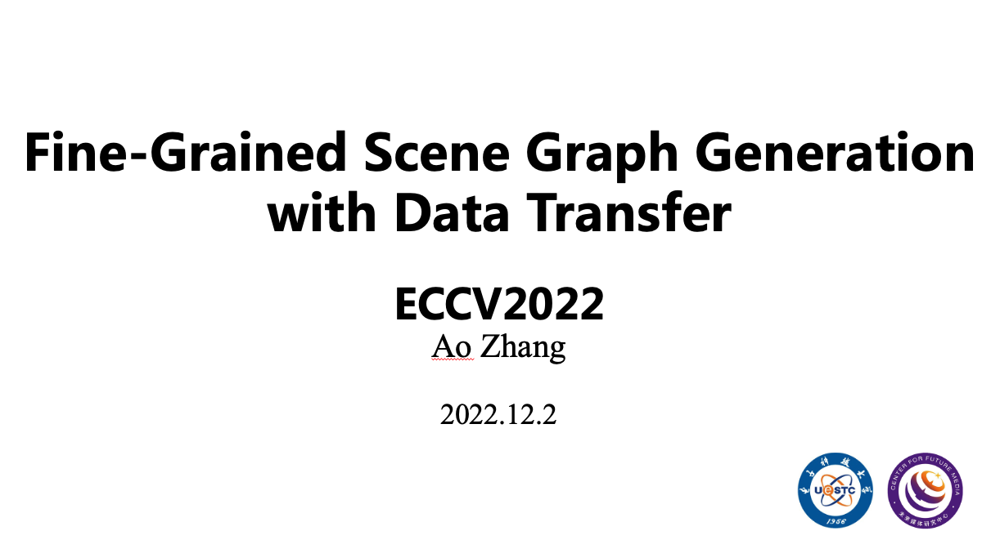

Seminars
Latest
All files are encrypted with password 1234

Topic: Bridging the Gap Between Anchor-based and Anchor-free Detection via Adaptive Training Sample Selection
Abstract: 目标检测的方法主要可以分为基于锚和无锚检测器两大类。在本文中，我们首先指出，基于锚和无锚检测之间的本质区别实际上是如何定义正和负训练样本，这导致了它们之间的性能差距。然后，我们提出了一种自适应训练样本选择（ATSS），以根据对象的统计特征自动选择正样本和负样本。它显著提高了基于锚和无锚探测器的性能，并弥补了它们之间的差距。在MS COCO上进行的大量实验支持我们的上述分析和结论。通过新引入的ATSS，我们在不引入任何开销的情况下，可提高检测器的性能。
Date: Dec 2, 2022
Materials: PPT & Video

Topic: Fine-Grained Scene Graph Generation with Data Transfer
Abstract: 场景图生成(SGG)用于提取图像中的(主语、谓语、宾语)三元组。然而，由于长尾分布和语义歧义等数据分布问题，当前SGG模型的预测严重倾向于几个通用但信息不丰富的谓词(如on、at)，从而极大地限制了模型的实际应用价值。为了解决这个问题，本文提出了一种数据层面的重标签方法，将粗粒度标签转化为细粒度标签，同时为未标签的主客体对赋予新的关系标签，从而获得一个增强数据集来训练网络。
Date: Dec 2, 2022
Materials: PPT & Video